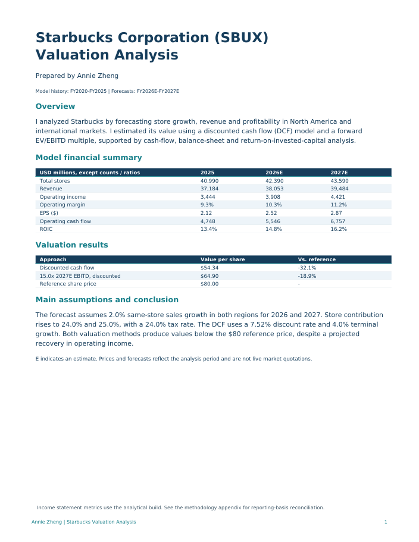
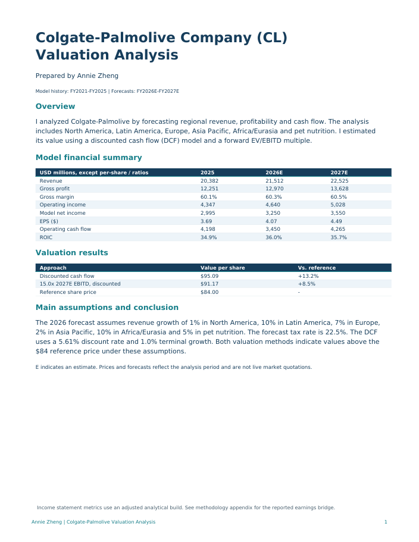

01 / Management reporting
Monthly P&L & financial reporting
A transaction-to-report workflow that makes revenue, expense categories and store profitability easier to review.
Explore projectFinance · Research · Business · Operations
I’m Annie Zheng, a Boston University graduate with a finance concentration. My projects connect financial reporting, operational workflows and company valuation.
Selected projects
Explore the problem, approach and assumptions behind each project, then open the reports or download the supporting files.
A transaction-to-report workflow that makes revenue, expense categories and store profitability easier to review.
Explore project
A sales-driven workflow that translates menu orders into ingredient usage, stock checks and suggested supplier orders.
Explore project
An editable scenario model comparing avoided platform costs with the incremental costs of direct ordering and delivery.
Explore project


Operating forecasts, cash-flow analysis and valuation studies covering Starbucks, Colgate-Palmolive and Costco.
Explore projectAbout my work
During my Sweet Bamboo internship, I worked on financial reporting and inventory workflows to help management understand costs and plan purchasing more consistently.
My valuation studies extend that analytical approach to public companies: linking business drivers to forecasts, cash flow and estimated value.